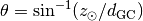
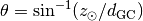

Description of Galactocentric coordinates transformation¶
This document describes the mathematics behind the transformation from
ICRS to Galactocentric
coordinates. This is described in detail here both due to the mathematical
subtleties and the fact that there is no official standard/definition for this
frame. For examples of how to use this transformation in code, see the
the Examples section of the Galactocentric class
documentation.
We assume that we start with a 3D position in the ICRS reference frame: a Right Ascension, Declination, and heliocentric distance, . We can trivially convert this to a Cartesian position using the standard transformation from Cartesian to spherical coordinates:
The first transformations will rotate the  axis so
that the new
axis so
that the new  axis points towards the Galactic Center (GC),
specified by the ICRS position
:
axis points towards the Galactic Center (GC),
specified by the ICRS position
:
The transformation thus far has aligned the axis with the
vector pointing from the Sun to the GC, but the  and
and
 axes point in an arbitrary direction. We adopt the
orientation of the Galactic plane as the normal to the north pole of
Galactic coordinates defined by the IAU
(Blaauw et. al. 1960).
This extra “roll” angle,
axes point in an arbitrary direction. We adopt the
orientation of the Galactic plane as the normal to the north pole of
Galactic coordinates defined by the IAU
(Blaauw et. al. 1960).
This extra “roll” angle,  , was measured by transforming a grid
of points along
, was measured by transforming a grid
of points along  to this interim frame and minimizing the square
of their positions. We find:
to this interim frame and minimizing the square
of their positions. We find:

The full rotation matrix thus far is:
![\begin{gathered}
\boldsymbol{R} = \boldsymbol{R}_3 \boldsymbol{R}_1 \boldsymbol{R}_2 = \\
\begin{bmatrix}
\cos\alpha_{\rm GC}\cos\delta_{\rm GC}& \cos\delta_{\rm GC}\sin\alpha_{\rm GC}& -\sin\delta_{\rm GC}\\
\cos\alpha_{\rm GC}\sin\delta_{\rm GC}\sin\eta - \sin\alpha_{\rm GC}\cos\eta & \sin\alpha_{\rm GC}\sin\delta_{\rm GC}\sin\eta + \cos\alpha_{\rm GC}\cos\eta & \cos\delta_{\rm GC}\sin\eta\\
\cos\alpha_{\rm GC}\sin\delta_{\rm GC}\cos\eta + \sin\alpha_{\rm GC}\sin\eta & \sin\alpha_{\rm GC}\sin\delta_{\rm GC}\cos\eta - \cos\alpha_{\rm GC}\sin\eta & \cos\delta_{\rm GC}\cos\eta
\end{bmatrix}\end{gathered}](../_images/math/f7495b2450ae78c5f44e0d20377589328cc5ac98.png)
With the rotated position vector
, we can now subtract the
distance to the GC,  , which is purely along the
axis:
, which is purely along the
axis:
where  .
.
The final transformation is to account for the height of the Sun above
the Galactic midplane by rotating about the final  axis by
the angle :
axis by
the angle :
where is the measured height of the Sun above the midplane.
The full transformation is then: